<nav class="navbar navbar-expand-lg navigation navbar-dark bg-dark">
  <div class="container px-4 px-lg-5">
    <a class="navbar-brand" routerLink="/"
      ></a>
    <button
      class="navbar-toggler"
      type="button"
      data-bs-toggle="collapse"
      data-bs-target="#navbarSupportedContent"
      aria-controls="navbarSupportedContent"
      aria-expanded="false"
      aria-label="Toggle navigation"
    >
      <span class="navbar-toggler-icon"></span>
    </button>
    <div class="collapse navbar-collapse" id="navbarSupportedContent">
      <ul class="navbar-nav me-auto mb-2 mb-lg-0 ms-lg-4">
        <li class="nav-item">
          <a class="nav-link active" aria-current="page" routerLink="/">Home</a>
        </li>
        <li class="nav-item">
          <a class="nav-link" routerLink="/movies">Movies</a>
        </li>
      </ul>
      <form class="d-flex">
        <button
          class="btn btn-outline-dark"
          type="submit"
          routerLink="../watchlist"
        >
          <svg
            xmlns="http://www.w3.org/2000/svg"
            width="16"
            height="16"
            fill="currentColor"
            class="bi bi-bookmark-plus-fill"
            viewBox="0 0 16 16"
          >
            <path
              fill-rule="evenodd"
              d="M2 15.5V2a2 2 0 0 1 2-2h8a2 2 0 0 1 2 2v13.5a.5.5 0 0 1-.74.439L8 13.069l-5.26 2.87A.5.5 0 0 1 2 15.5zm6.5-11a.5.5 0 0 0-1 0V6H6a.5.5 0 0 0 0 1h1.5v1.5a.5.5 0 0 0 1 0V7H10a.5.5 0 0 0 0-1H8.5V4.5z"
            />
          </svg>
          Watchlist
          <span class="badge bg-dark text-white ms-1 rounded-pill">{{
            watchlistItems
          }}</span>
        </button>
      </form>
    </div>
  </div>
</nav>
